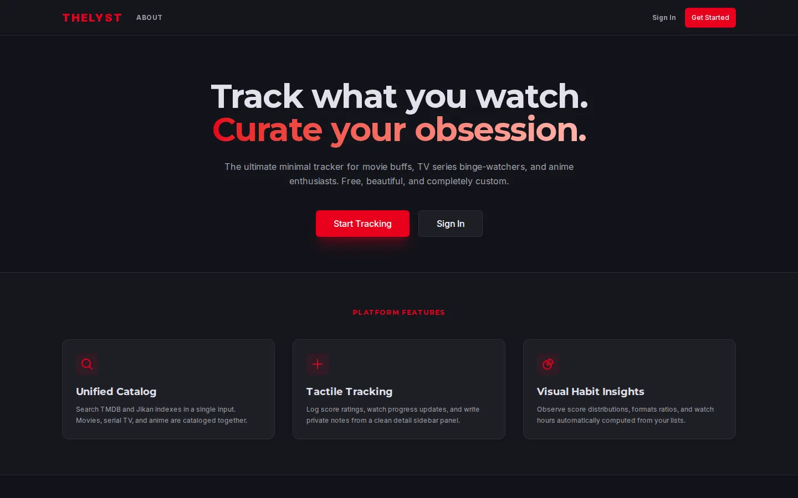
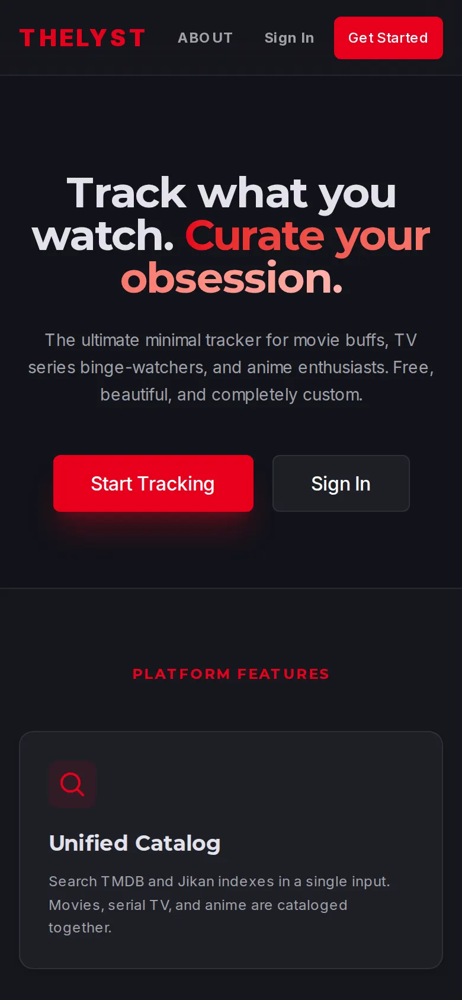

Software engineer building AI and automation tools for enterprise data platforms.
Associate Consultant at Bristlecone, Mumbai. Also builds full-stack web and mobile apps.
Manual migration and development work : Up to 70% less effort
At Bristlecone (Associate Consultant, SAP Analytics, since July 2025) I build AI and automation accelerators for SAP data platforms, the systems many large companies run their data and reporting on.
Up to 70% less manual effort in migration and development activities.
Brilliant Beginner Award and SPOT Award, for contributions to AI and automation initiatives.
SAC, Datasphere, BusinessObjects, BW Modeling, HANA Modeling, CPI-DS.


A private Android app for money tracking and bill splitting in one place. Bank and UPI SMS alerts become transactions, any of them can be split with a group, and nothing leaves the phone.
Kotlin, Jetpack Compose, Room, SQLCipher, Hilt, WorkManager